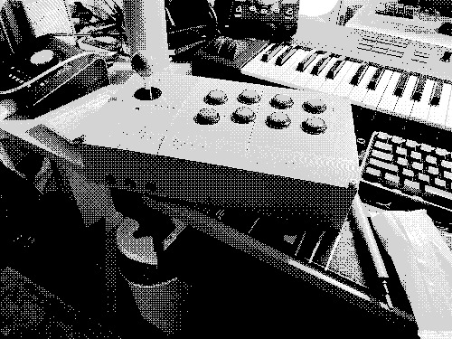

hytheaway
(.github.io)
m3
mini midi manipulator
stress, deadlines, naïveté - these qualities defined this project for me.
i'm no stranger to getting myself in over my head. setting unrealistic standards for myself is how i learned to push myself. if i envision a project that excites me enough, it feels like any barrier is hardly more than a speedbump. for example, this project: a revision of the cerial ver. 2, with a custom designed enclosure and completely overhauled internals, including the brand spanking new meap v3b, and the ability to communicate between meap boards. reasonably, how difficult could this really be?
i'm no stranger to getting myself in over my head. setting unrealistic standards for myself is how i learned to push myself. if i envision a project that excites me enough, it feels like any barrier is hardly more than a speedbump. for example, this project: a revision of the cerial ver. 2, with a custom designed enclosure and completely overhauled internals, including the brand spanking new meap v3b, and the ability to communicate between meap boards. reasonably, how difficult could this really be?

okay, well, let me design the enclosure first, and then while it's printing, i'll get to work on replicating the electronics setup from the cerial ver. 2.
oh... right.
i don't actually...
...
...know... how to do that.
oh... right.
i don't actually...
...
...know... how to do that.
i don't know! i guess i thought this would be a good way to learn
some simple 3d modeling. i mean, a simple, low stakes project that i could take my time with and really figure it all out and-
...sorry? ...one week? ...and 50% of my final grade is dependent on it?
:')
okay, okay, i can do this - i've dug myself out of worse before. remember that one time i
...sorry? ...one week? ...and 50% of my final grade is dependent on it?
:')
okay, okay, i can do this - i've dug myself out of worse before. remember that one time i